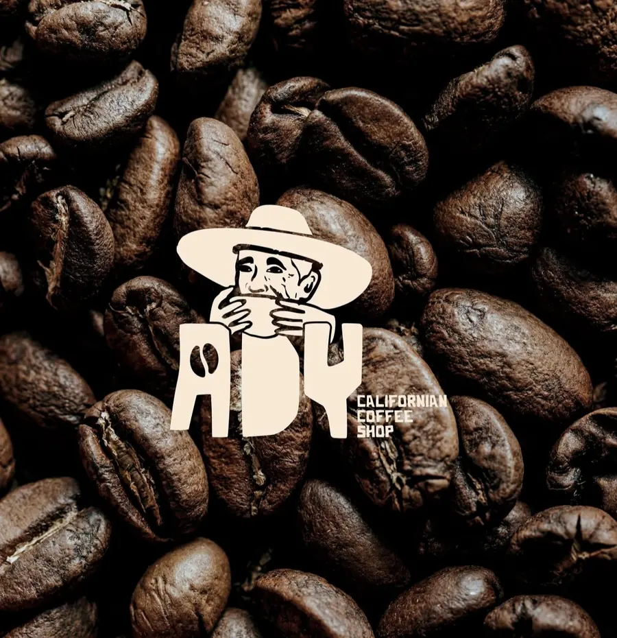
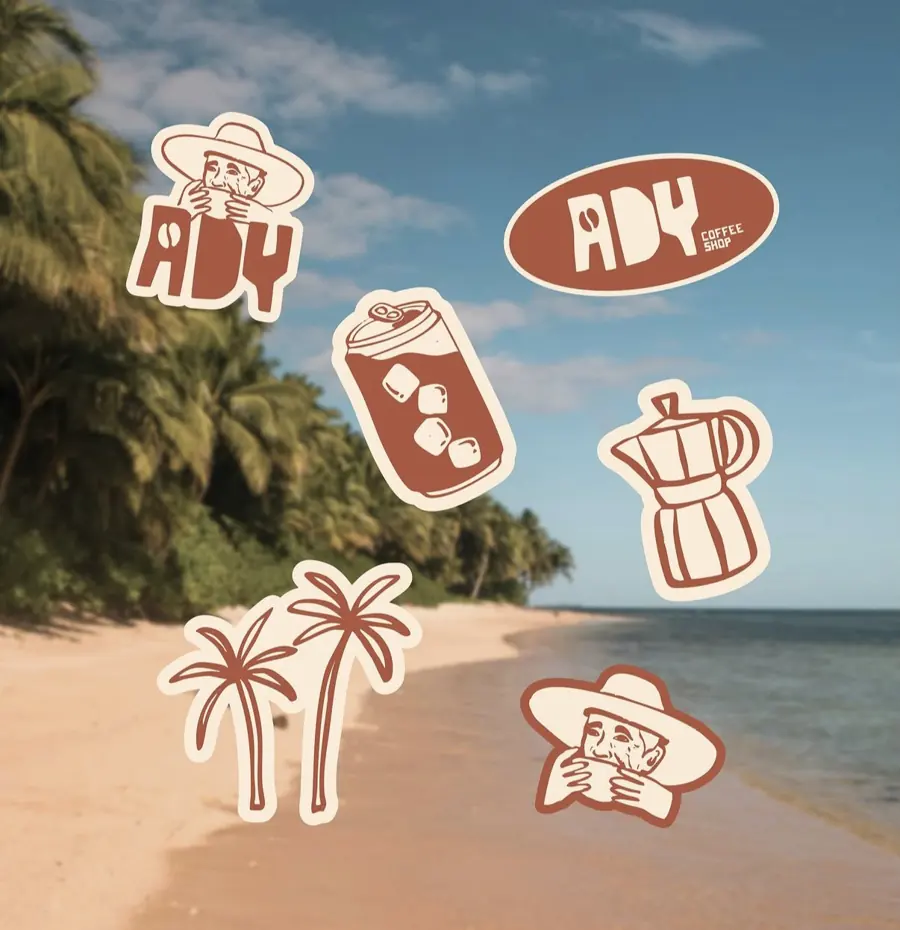

Adresse
Durivage, 97180 Sainte-Anne, Guadeloupe
À 5 minutes à pied de la plage de la Caravelle.
ItinérairePasse nous voir
Un coffee shop californien à Durivage, Sainte-Anne. À 5 minutes à pied de la plage de la Caravelle.
2 300+ personnes nous suivent déjà sur Instagram
Durivage, 97180 Sainte-Anne, Guadeloupe
À 5 minutes à pied de la plage de la Caravelle.
ItinéraireLe shop en vrai


Maracudja, goyave, gwozey : les fruits d’ici, dans nos verres.
Voir la carteL’esprit Ady
Des boissons glacées généreuses, du bon café, et la mer à deux pas.